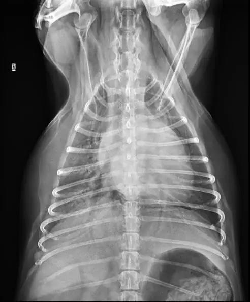
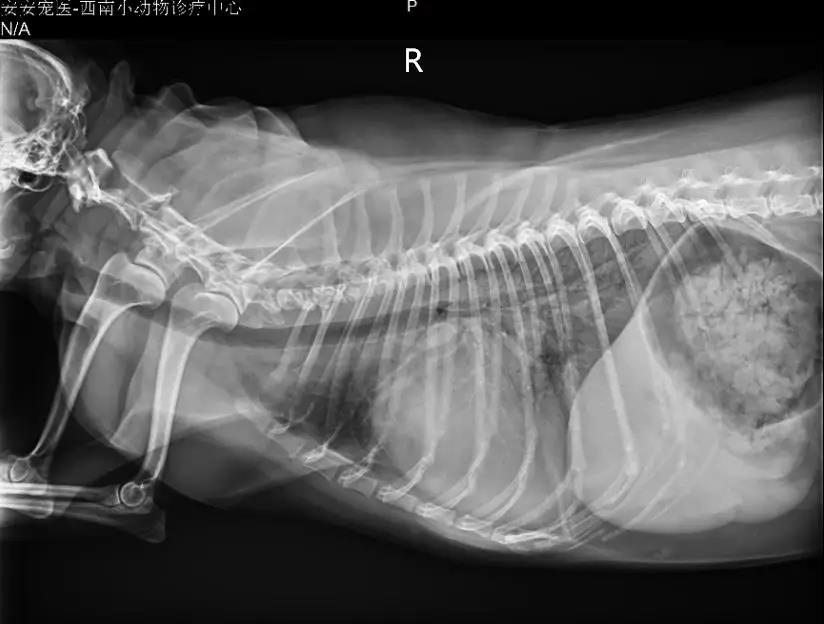
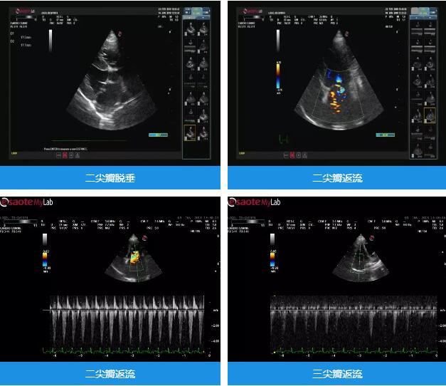
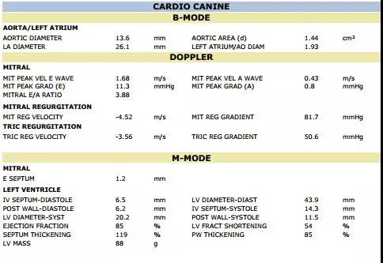
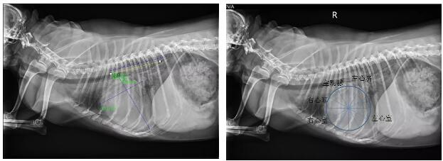
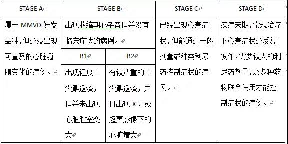

2019-03-27
2019-03-27
 76
76
二尖瓣粘液瘤样退行性病变（MMVD）是犬类最常见的心脏疾病，占犬心脏病的75%~80%。MMVD会出现于所有种类的犬，但小型和中型犬好发，以国内来说，博美、吉娃娃、贵宾、雪纳瑞是较高发的品种。MMVD是一种慢性退行性疾病，随着疾病发展，二尖瓣瓣膜逐渐增厚，形态变不规则，从而造成二尖瓣功能不良，在心脏收缩期时出现二尖瓣返流。该病有较长的亚临床期，返流严重的犬最终会发展出左心充血性心衰，引起肺水肿。该病的诊断主要依靠听诊心杂音、胸腔X光片拍摄，最终通过心脏彩超来确诊。美国兽医内科医学会（ACVIM）依据疾病发展程度及是否出现心衰症状，将MMVD分为A、B、C、D四期，以指导临床兽医对该病的分级及治疗。
在临床工作中MMVD是老年小型犬的常见病，本文结合笔者近期所接诊的一例较典型的MMVD病例，对该病的诊治进行总结，以供同行参考。 病例信息：雪纳瑞母已绝育10岁，9kg；主诉：近三个月有晕厥过数次，运动后容易喘气、疲劳，近三天开始平静时呼吸也比较快，经常在夜间咳嗽，精神食欲变差。 初诊症状：呼吸较快、用力，精神意识尚可。
体格检查：BCS:6/9，体温：38.7℃，呼吸频率60~80次/分，呼吸用力，听诊肺音增强，有湿啰音；心率：120次/分，心杂音Ⅳ/Ⅵ，PMI:左侧心尖部，CRT<2S
血液生化检查：血常规、生化无显著异常。
血压：收缩压113mmHg 心电图：窦性心率，节律正常，未见早搏波。
胸腔X光片可见侧位片下肺门及肺尾叶区域不透性增强，有间质征混杂肺泡征像，左心房影突出，气管上抬，VHS:14.5。正位片下可见右侧肺叶有较明显的空气支气管征。
 心脏彩超可见二尖瓣增厚，前叶后叶均有较严重脱垂，左心房中度增大，二尖瓣严重返流、三尖瓣中度返流。
病例分析及诊断要点
心杂音是老年犬常见的理学检查异常，并且最常见的原因是MMVD引起的二尖瓣返流，所以结合动物年龄及心杂音的出现是诊断MMVD的第一步。心杂音强度可被分为Ⅰ~Ⅵ级：Ⅰ级心杂音较难被察觉；Ⅱ级心杂音往往只能在最强点（PMI）处被听到；Ⅲ级心杂音能在同侧胸壁较大范围内听到，但往往辐散不到对侧胸壁；Ⅳ级心杂音强度较强，能在双侧胸壁明显听到，但触诊心前区时不能感受到震颤；Ⅴ级心杂音时，触诊心前区能感受到震颤；Ⅵ级心杂音时，除心前区震颤，在靠近动物时，不借助听诊器也能听到杂音。心杂音的强度与MMVD的严重程度有相关性，疾病越严重时，心杂音越强。MMVD所出现的心杂音为收缩期返流音，听诊时其PMI在左心尖区域，严重MMVD时杂音等级常≥Ⅲ级。
胸腔X光片拍摄是心肺的常规检查手段，但对于呼吸困难病例，拍片应激可能会使动物突然死亡，所以应视动物状态而决定是否能拍片，并且拍摄正位片时建议采取DV位。严重的MMVD会使心脏腔室增大，评估心脏大小对疾病严重程度的判断有较大意义。通过胸腔X光片可初步评估心脏大小，椎体分数（VHS）的运用会使评估更具有客观性（图1）。正常犬VHS一般＜10，但需考虑不同品种、胸型犬间的差异。除使用VHS评估心脏整体大小外，通过钟盘法（图2）划分心脏区域来评估局部的增大也很有意义。MMVD最常引起左心房变大，所以在侧位片12点、1点钟方位常看到突出的左心房影。同时，在动物就诊时已经有明显呼吸变快的情况下，胸片的拍摄可以较快的确认动物是否出现肺水肿，犬类肺水肿时常出现肺门附近区域及肺尾叶的不透性增加。
早期MMVD一般不会出现心电图方面的异常，但随着疾病的加重，左心房的严重增大常常会引起心动过速性心律失常，如：室上性心动过速、房颤等，恶性的心律失常会造成动物心输出量急剧下降，影响预后，所以心电图监测意义重大。
MMVD最后都需通过心脏彩超来确诊。B超模式下二尖瓣瓣膜的增厚、脱垂是MMVD的重要特征。彩色血流多普勒模式下可见收缩期经二尖瓣出现在左心房内的血液湍流信号，即为二尖瓣返流，通过判断返流血流信号的强弱及占左心房面积的大小，能大体评估出返流的严重程度，左心房内出现的返流信号越多，则返流越严重。同时，心脏彩超对于心脏腔室大小的评估比X光片更准确。右侧胸骨旁短轴心基部切面是评估左心房是否增大的常用切面，舒张期左心房内径与主动脉直径的比值LA/AO>1.6提示左心房出现增大。三尖瓣返流也时常会出现于MMVD病例，对返流速度进行测量至关重要，流速>3m/s则提示存在有肺动脉高压的情况。肺动脉高压是严重MMVD的常见并发症，影响疾病预后。
血常规、生化及血气是常规的检查项目，有助于排除与MMVD并发的其他器官疾病。
综上，该病例初诊时最明显的症状为呼吸急促，听诊时该犬有较强的心杂音，同时还存在肺部的湿罗音，因此MMVD引起的左心衰、肺水肿是重要的鉴别诊断。胸片显示该犬VHS值较大，并且左心房影明显，肺门及肺尾叶区域不透性增强，有肺泡征，进一步提示左心充血性心衰引起肺水肿的可能性较大。最终通过心脏彩超确诊为MMVD引起的充血性心衰。
治疗要点 由于MMVD是慢性疾病，所以对MMVD病例进行分级很重要，不同阶段的病例会涉及不同的治疗方法。下表为ACVIM制定的MMVD犬分级标准：
目前来说B1期动物无需特别的心脏药物治疗，但需要定期复查及指导主人在家数呼吸。对于B2期，即心脏腔室增大，但还没有出现呼吸变快等心衰症状的病例，匹莫苯丹已被证实能有效延缓B2期动物心衰症状的出现。当动物出现心衰症状时，即疾病已到达C或D期，这时首先要解决的是因肺水肿引起的呼吸急促、困难，对于急性心衰病例往往需要住院吸氧，并尽快静脉或皮下注射呋塞米1~4mg/kg，2~6h/次，同时应要尽量避免造成动物应激及挣扎的操作，如：测肛温。呋塞米的用量及使用频率主要根据动物肺水肿严重程度及首次用药后动物呼吸的改善情况来决定，通常动物呼吸会在首次用药2小时后得到改善。在动物呼吸稳定后，可减少呋塞米的用量及使用频率，并逐渐过渡到口服维持量进行慢性心衰控制。
该病例按照分级标准为C期病例，并处于急性心衰期，肺水肿程度较严重，所以进行吸氧，重症监护治疗，并按照2mg/kg/4h进行呋塞米静推，在使用利尿药12小时后呼吸频率有明显下降，随后改变呋塞米给药为1mg/kg/8h，在治疗24小时后，该犬精神逐渐恢复并开始自主采食、饮水。
总结
MMVD的诊断是理学检查及影像学检查的结合，心杂音的判断是第一步，x光片及心脏彩超可进一步验证诊断。对于急性心衰病例，及时辨别症状，并尽快通过影像学检查验证后，即可马上开始吸氧及利尿治疗。
参考书籍
1.textbook of small animal internal medicine eighth edition
2. BSAVA Manual of Canine and Feline Thoracic Imaging
3.Small Animal Diagnostic Ultrasound 3rd
4.Rapid Interpretation of Heart and Lung Sounds
5.Prevalence and Prognostic Importance of Pulmonary Hypertension in
Dogs with Myxomatous Mitral Valve Disease